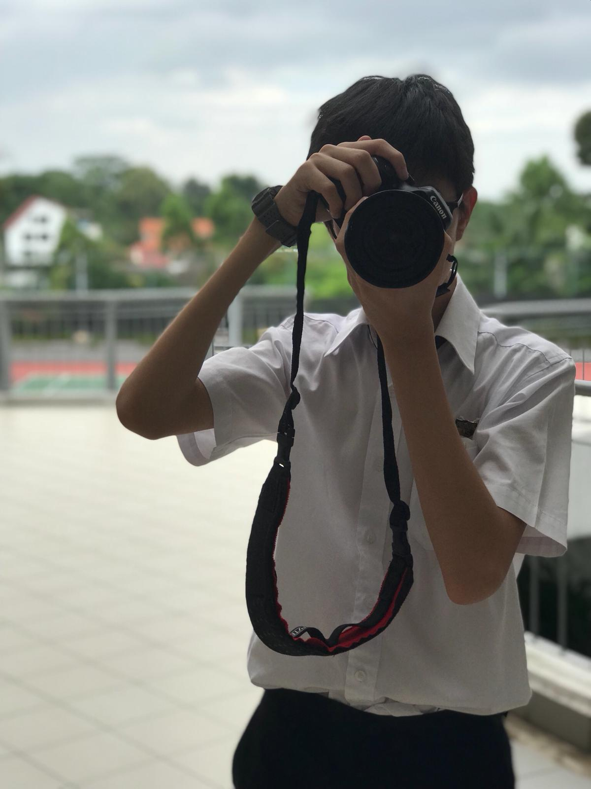

Who Am I?
My name is Ervin Lee and I am 17 years old. I am currently a Year 1 Diploma in Infocomm Security Management student in Singapore Polytechnic and almunus of Anglo-Chinese School (Barker Road).
In Secondary One, I signed up for a coding workshop that teaches basic Python during the holidays all over boredom. That was when I instantly fell in love in programming. It was after this particular workshop that I started finding ways to develop my passion for programming.
Without hesitation, I chose O-Level Computing to be part of my Secondary Three subject combination and applied for the diploma I am currently in today via the Early Admissions Exercise (EAE).
In my free time, I taught myself how to code in languages other than Python such as JavaScript, C++ and HTML. If you would like to see some projects that I have done, feel free to check out my GitHub page at my contact information below!
Despite scoring enough for O-Levels to get into Anglo-Chinese Junior College (ACJC), I still chose to pursue my dream course in a polytechnic because polytechnics offer modules and opportunities to further develop my interests in computing, in which JCs can never offer to me.
I say this because many parents, including my own, might not support such a decision. Nevertheless, I definitely have no regrets and I'm happy I made this decision!
My hobbies
Photography
I like taking pictures with my DSLR Canon 1300D and making my imagination come to life with Photoshop. My hobby began when I joined photography club in secondary school. I showcase my photographs on my Instagram page which you can find in the footer of this page.
Aviation
I am an aviation geek that loves planespotting and learning a lot about aviation industry and flying. My interest mostly comes from my family who is from the airline industry. I also like taking pictures of planes in action using my photography skills.
Gaming
During my free time or when I want to de-stress, I like to play some video games (mainly Minecraft). I mostly play Bed Wars and SkyWars on Hypixel. Sometimes I also practise Java coding by modding the game :D
My Career Aspirations
After graduating with my diploma, I plan to enter the Cyber NSF Scheme during my National Service for three years while taking on work-study programmes at a partner university and vocational training in the scheme. I wish to pursue a degree in Computer Science to expose myself to other aspects of the IT industry such as AI and App Development which might supplement my cybersecurity career.
My dream job is to work as a Cyber Defense Officer, monitoring Singapore's networks in real time and conducting digital forensics investigations in the event of cyber attacks or crimes.
Some soft skills required in this job include quick decision making, adaptibility and problem solving. This is crucial in incident response and digital forensics.